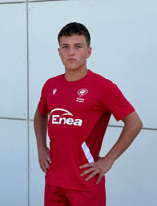
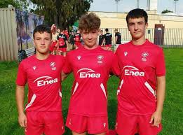

Młody rugbista z Siedlec, zawodnik MKS Pogoń Awenta Siedlce.
Reprezentant Polski U16
– brał udział w zgrupowaniach i meczach kadry narodowej.
Reprezentant Mazowsza U18
– powoływany na zgrupowania wojewódzkie przygotowujące do mistrzostw Europy.
Aktywny sportowiec lokalny
– uczestniczył także w zawodach lekkoatletycznych, m.in. biegach przełajowych szkół ponadpodstawowych w Siedlcach.
Ulubiony szkoleniowiec
– Marcel w wielu wywiadach mówi, że jest nim Maciej Misiak.
Odwiedź stronę klubu: MKS Pogoń Awenta Siedlce

